速览
找出程序缺陷 bug 并消灭它的调试体制，是所有游戏都需要的。通常在产品版里浮出水面的只是极少数 bug，在那之前修了数不清的 bug。能修改游戏的员工（尤其是程序）若也去做测试游玩，时间损失很大，所以大多设立调试员等，有组织地找 bug，甚至有调试专门公司。樱井为难以想象实际体制的人大致讲解调试流程：大前提是统一每天更新的 ROM 版本——在不同版本上出的 bug 没有参考价值，很麻烦。首先测试游玩：不是漫无目的地玩，而是把规格书上写的项目组合逐一穷举，或分成小组细查负责部位，不放过遗漏；也会制作检查清单。发现 bug 后摸清复现方法，写成工单（ticket）报告——工单就是写在网络上的任务，确实交接能减少遗漏的可能。管理者按工单的重要性给 bug 评级：S 级是卡死或可能损坏存档的，A 级是妨碍游戏进行的等，级别低的视情况可能搁置。评级的同时决定分给哪个部门或负责人——bug 不一定只由程序修：角色贴图错乱由美术修，动作破绽由动作设计修。修正反映后工单回到调试员手里，在多种组合下确认修好了才终于结束；但工单不会删除，而是以「完成」状态保存，以防再发。通过工单在负责人间交接，不让它悬空、确实地交接修正。相关的 bug 工单之间会互相参照或合并；工单积压多的人，别人会接过一部分帮忙——任务可视化在任何事上都很重要。调试最难的游戏，首先是《大乱斗》这种；开放世界作品能无限移动也很难。这种情况只靠人手很辛苦，所以也会让电脑跑来找问题：《大乱斗》也会让电脑对战跑一整晚来找 bug。调试总之需要次数，到了后期会在全世界进行：日本、欧洲、美国接力同一份 ROM 数据推进。但 bug 最麻烦的是修 bug 可能引入新 bug，和 bug 本身一样，不是小心就能防住的。无论如何问题都会出现，为了迅速发现、迅速解决，世界各地现在也在进行调试。
1. 为什么需要调试体制 0:03
找出程序缺陷 bug 并消灭它的调试体制，所有游戏都需要。通常在产品版里浮出水面的 bug 只是极少数，在那之前已修正了数不清的 bug。
能修改游戏的员工（尤其是程序）如果也去做测试游玩，时间损失很大。所以大多会设立调试员，有组织地找 bug——甚至有专门做调试的公司。
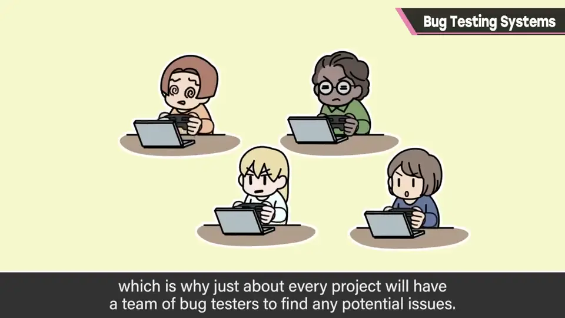
2. 前提：统一 ROM 版本 0:47
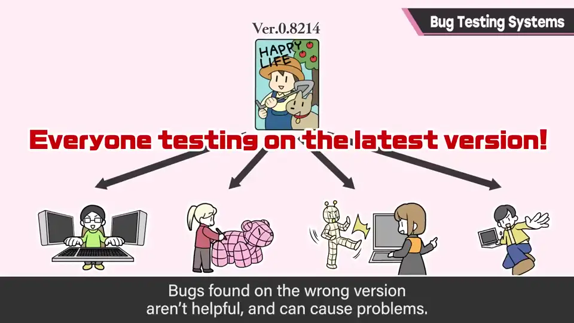
3. 测试与检查清单 0:55
调试员进行测试游玩，但不是漫无目的地玩：把规格书上写的项目组合逐一穷举，或者分成小组、细查负责的部位，避免遗漏。也会制作检查清单。
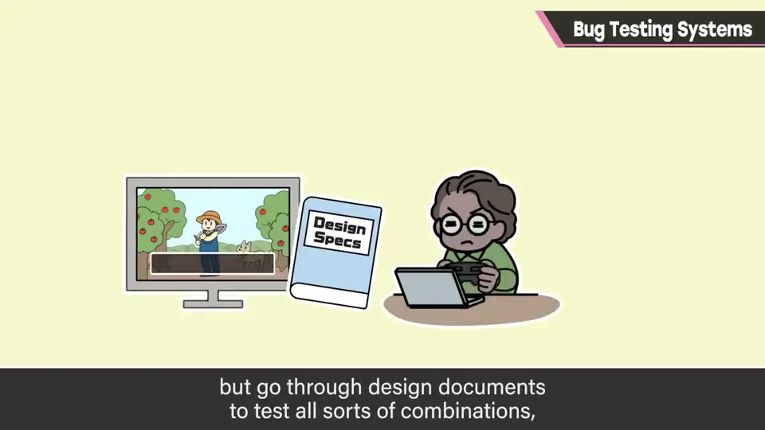
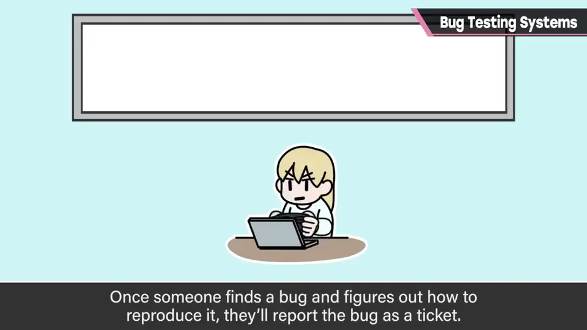
4. 工单与评级 1:12
发现 bug 后，先摸清复现方法，然后写成工单（ticket）报告。工单就是写在网上的任务；把任务确实交接下去，能减少遗漏的可能。
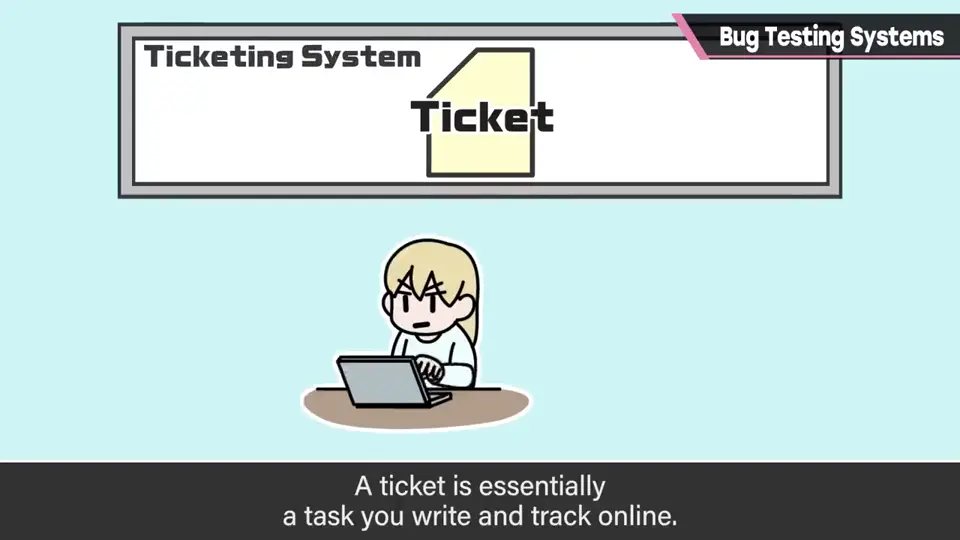
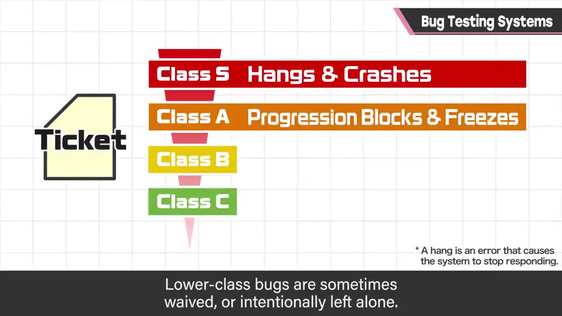
管理者根据工单的重要性给 bug 评级：S 级是卡死或可能损坏存档的；A 级是妨碍游戏进行的；级别低的视情况可能被搁置。
评级的同时，决定分配给哪个部门或负责人。bug 不一定只由程序来修：角色贴图错乱由美术修，动作破绽由动作设计师修。
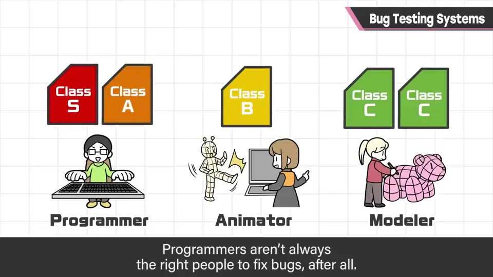
多种组合} G -- 未修好 --> E G -- 修好 --> H[以完成状态保存]
5. 确认与保存 2:08
修正反映后，工单再回到调试员手里，在多种组合下确认修好了，才终于结束。
但工单不会被删除，而是以「完成」状态保存，以防再次发生。
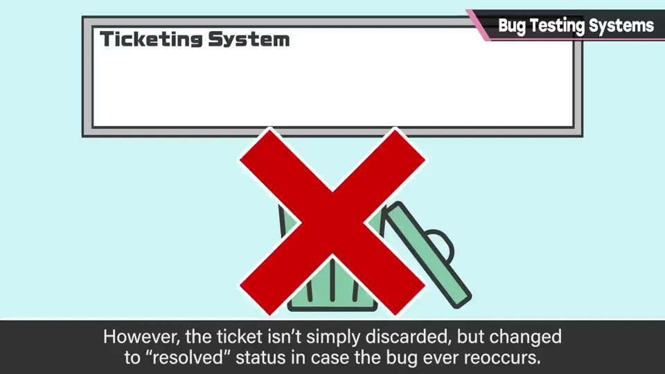
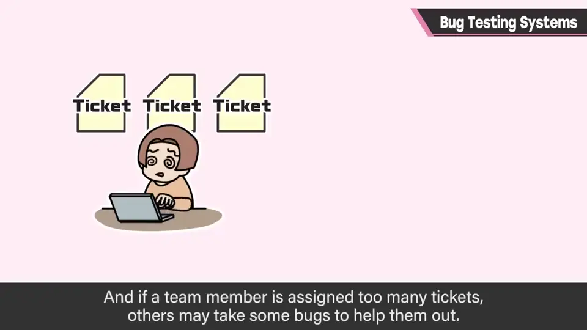
通过在负责人之间传递工单，不让问题悬空，确实地交接和修正。相关的 bug 工单之间会互相参照或合并；工单积压太多的人，其他人会接过一部分帮忙。
6. 难调试的游戏与自动化 2:57
调试最辛苦的游戏，首先是《大乱斗》这类；像开放世界那样能无限移动的作品也很难。
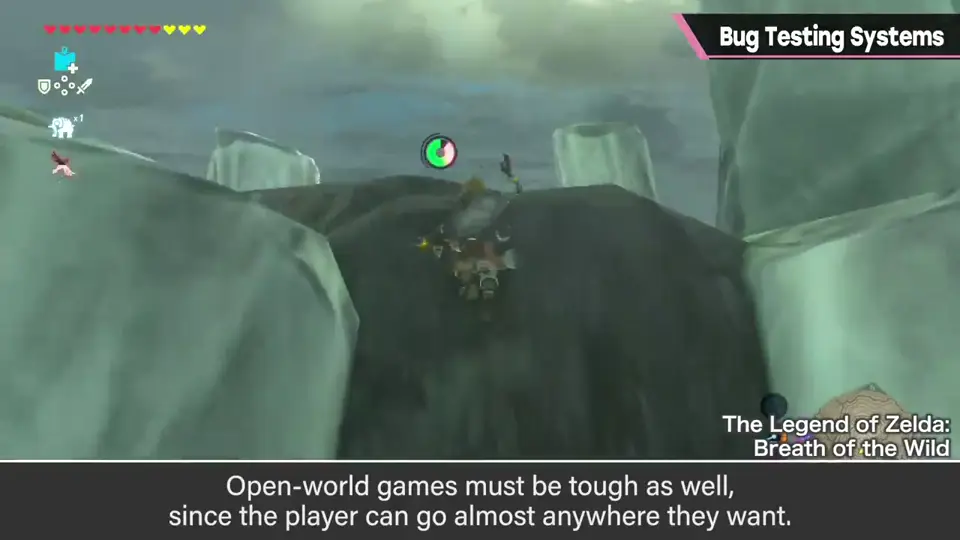
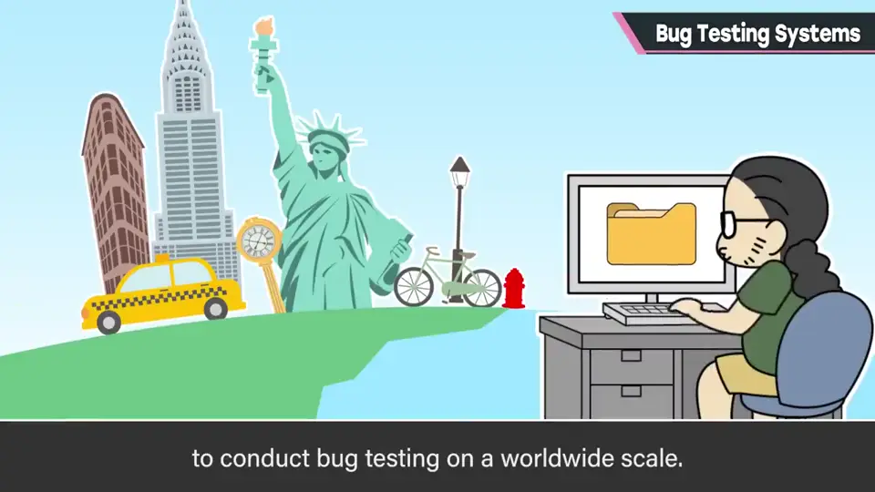
这种情况只靠人手调整很辛苦，所以也会让电脑跑起来找问题：《大乱斗》也会让电脑对战跑一整晚来找 bug。
调试总之需要次数，到了后期会在全世界进行：日本、欧洲、美国接力同一份 ROM 数据推进。
7. 最麻烦的地方 3:38
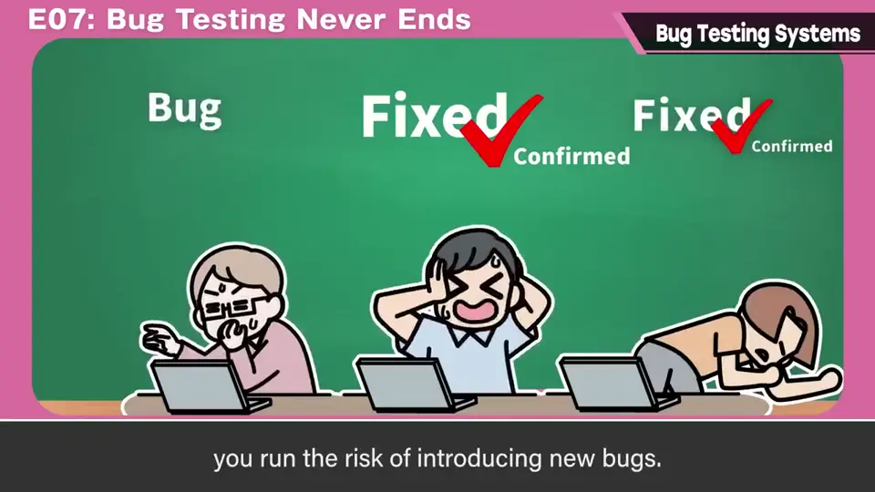
无论如何问题都会出现。为了迅速发现、迅速解决，世界各地现在也在进行调试。
自测题
1. 调试的大前提是什么？
统一每天更新的 ROM 版本，不同版本上的 bug 没有参考价值。 0:47
2. S 级和 A 级 bug 分别指什么？
S 级：卡死或可能损坏存档；A 级：妨碍游戏进行。 1:34
3. bug 修好后工单如何处理？
回到调试员确认；不删除，以完成状态保存以防再发。 2:08
4. bug 最麻烦的一点是什么？
修 bug 可能引入新 bug，且不是小心就能防住。 3:38